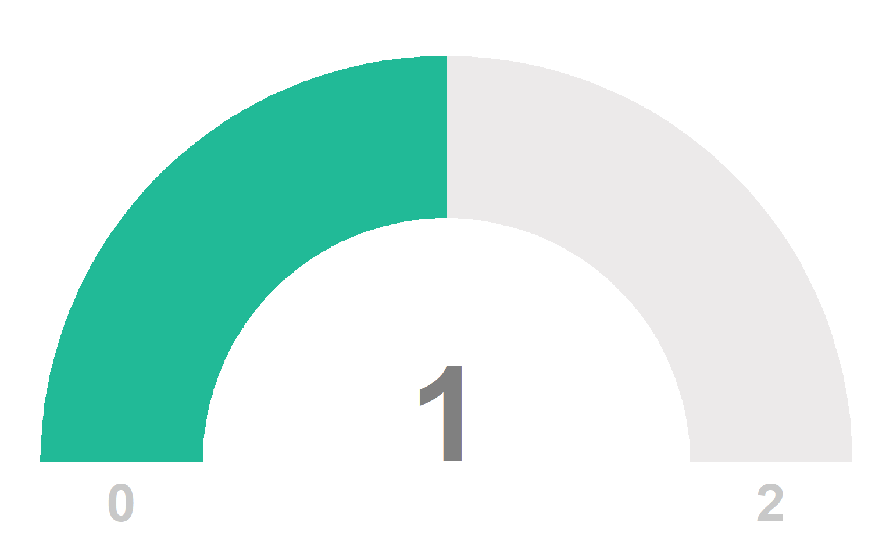

Unique MRNs
24
Screenings Started
25
Screenings Completed
25
Screening Items Complete but EM Status Impression Incomplete
0
Reporting Guidance Link Clicks
2
Abuse Types Link Clicks
0
Missingness Summary
Textbox Data
Intent to Report to APS Summary
Number of Intended APS Reports that Were Made

Indicators of EM Module By Suspect EM